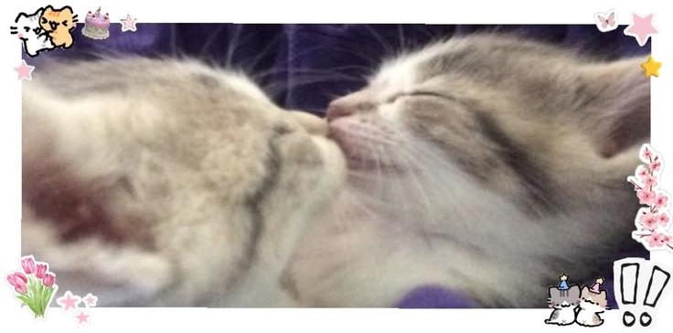

Feliz aniversário, amor.
Eu passei dias pensando no que escrever aqui, porque, por mais estranho que pareça, falar sobre você nunca é fácil. Não porque faltam coisas para dizer, mas porque sempre parece que nenhuma palavra consegue expressar exatamente o que sinto por você.
Isso é bem irônico, considerando que a escrita sempre foi a forma que encontrei de organizar meus sentimentos. Mas quando se trata de você, nada parece suficiente. Talvez porque o que eu sinto por ti ultrapasse as palavras que eu conheço.
Hoje é o seu aniversário, e eu poderia passar páginas inteiras falando sobre o quanto você é importante para mim. Sobre o quanto admiro você, sobre as pequenas coisas que você faz sem perceber, sobre os momentos que ficaram guardados na minha memória sem que você sequer imaginasse.
Às vezes eu penso em quantas coincidências precisaram acontecer para que nossos caminhos se cruzassem.
Mas acho que, acima de tudo, eu queria agradecer. Antes de você, eu não sabia que era possível me sentir dessa forma.
Você transformou coisas comuns em especiais. E acho que uma das minhas partes favoritas de te amar é justamente essa: perceber você em pequenos detalhes. Porque, de todas as coisas que poderiam ter acontecido comigo, te conhecer foi a melhor delas.
Eu poderia te desejar todas aquelas coisas que as pessoas costumam desejar hoje: felicidade, sucesso, paz, realização de sonhos.
Mas a verdade é que eu só quero que a vida te devolva um pouco de tudo o que você oferece a mim: a sua gentileza, seu amor, o conforto que existe na sua presença, a forma como você torna os meus dias mais leves sem sequer tentar.
Quero que você encontre motivos para sorrir com a mesma facilidade com que me faz sorrir, que receba o mesmo carinho que oferece aos outros. Que se sinta amada, valorizada e compreendida, não apenas hoje, mas em todos os dias.
Porque, se existe alguém que merece coisas boas, é você.
Eu amo muito você, meu anjinho.